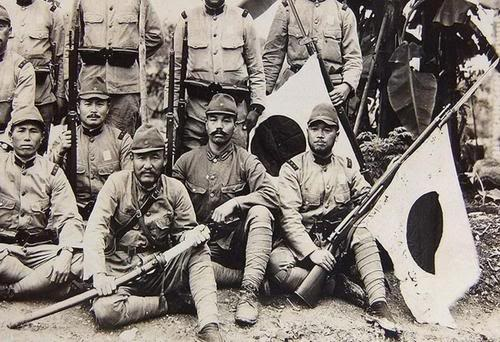

jawa hokokai
sejarah jawa hokokai atau himpunan kebangkitan jawa
sejarah jawa hokokai atau himpunan kebangkitan jawa
Jawa Hokokai atau himpunan kebangkitan Jawa, merupakan organisasi yang dibuat oleh Jepang pada saat menjajah Indonesia. Sebelum dibentuknya Jawa Hokokai, jepang sempat membentuk organisasi-organisasi sosial seperti Gerakan tiga A dan putera. Pada masa itu, pihak Jepang menyadari kalau organisasi sosial Putera lebih memiliki manfaat besar bagi pihak Indonesia ketimbang jepang sendiri, sehingga dibentuklah Jawa Hokokai. Anggota Jawa Hokokai mencakup semua golongan masyarakat, diantaranya Cina, Arab dan Pribumi.Jawa Hokokai terdiri dari berbagai macam himpunan kebaktian sesuai dengan bidang profesinya masing-masing, seperti Kyoib Hokokai (kebaktian para pendidik guru-guru) dan Isi Hokokai (wadah kebaktian para dokter).
Peran Jawa Hokokai yaitu untuk mengerahkan tenaga dan mobilisasi potensi sosial ekonomi, contohnya dengan melakukan penarikan hasil bumi sesuai target yang ditentukan. Hasil bumi tersebut diperuntukkan sebagai pemenuh kebutuhan pangan tentara jepang pada masa perang.Jawa Hokokai memiliki kegiatan-kegaitannya tersendiri. Kegiatan tersebut meliputi beberapa hal, yaitu: Melaksanakan segala sesuatu dengan nyata dan ikhlas untuk menyumbangkan segenap tenaga kepada pemerintah Jepang, Memimpin rakyat untuk menyumbangkan segenap tenaga berdasarkan semangat persaudaraan antar segala bangsa, Memperkokoh pembelaan tanah air.
Jenderal Kumakici Harada merupakan pendiri dari Jawa Hokokai. Ia juga merupakan Panglima Tentara ke-16. Perjalanan karier Kumakichi Harada dimulai tahun 1910. Ia bergabung dalam kesatuan infantri ke-44 di Kochi, Jepang. Pada 1927, ia bertugas ke China daratan sebagai atase militer di kedutaan. Setelah Jepang menduduki Indonesia, pada 8 Januari 1944, Jenderal Kumakici Harada mendirikan Jawa Hokokai atau Himpunan Kebaktian Jawa dengan tujuan menumbuhkan persatuan serta semangat rakyat Jawa.
Nyonya Sunarjo Mangunpuspito adalah pemimpin Fujinkai. Fujinkai merupakan organisasi perempuan yang meleburkan semua organisasi perempuan Indonesia. Jepang membutuhkan organisasi ini sebagai tenaga bantuan untuk mengatasi masalah sosial ekonomi yang buruk dalam masa tersebut. Lewat Fujinkai ini, diadakan kegiatan sosial yang berada di kampung-kampung dalam kota, misalnya penyuluhan soal kesehatan.
Kuniaki Koiso merupakan Perdana Menteri Jepang ke-41 pada 22 Juli 1944 hingga 7 April 1945. Koiso dilahirkan di Prefektur Tochigi tahun 1880. Dalam sidang parlemen di Jepang, Perdana Menteri Kuniaki Koiso merilis keputusan resmi Kekaisaran Jepang yang membuat beberapa pihak terkejut. Putusan ini memicu banyak reaksi, salah satunya dari organisasi Fujinkai yang merupakan salah satu bagian dari Jawa Hokokai.
Jenderal Kumaikici Harada membentuk Jawa Hokokai atau Himpunan Kebaktian Jawa pada 8 Januari 1944. Jawa Hokokai dibentuk untuk menumbuhkan persatuan dan semangat rakyat. Dan dibubarkan pada 1945 dengan alasan tidak dapat berkembang sesuai keinginan Jepang dan dibubarkan untuk bergabung dengan organisasi pergerakan baru lainnya.
tujuan dibentuknya Jawa Hokokai adalah
1). Karena Jepang semakin terdesak di perang Asia dan Pasifik, sehingga perlu membutuhkan bantuan rakyat Indonesia secara lahir dan batin.
2). Membutuhkan persatuan dan semangat rakyat
3). Membantu Jepang dalam membutuhkan kebutuhan pokok perang.
Rakyat ditugaskan untuk mengumpulkan padi, permata, besi tua, hingga menanam pohon jarak yang nantinya diserahkan kepada Jepang.